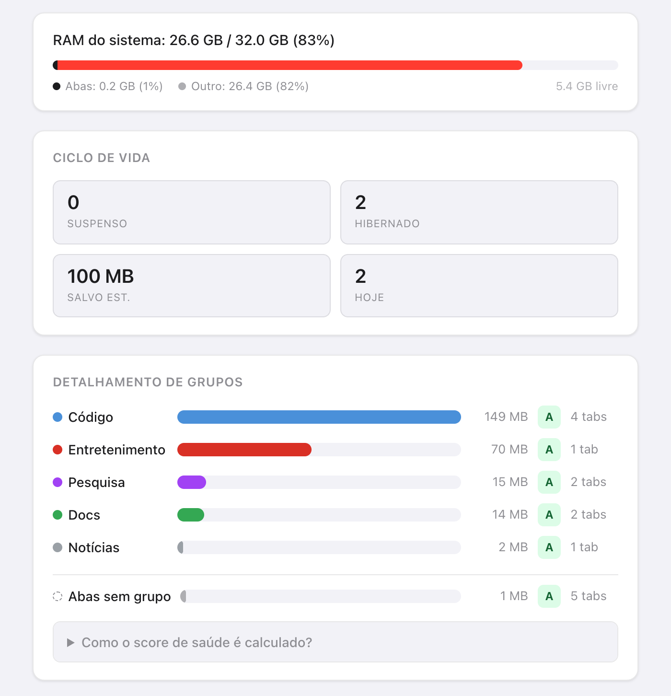
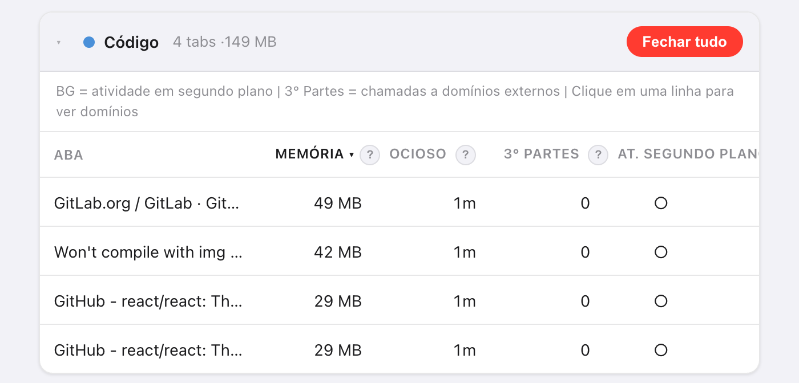
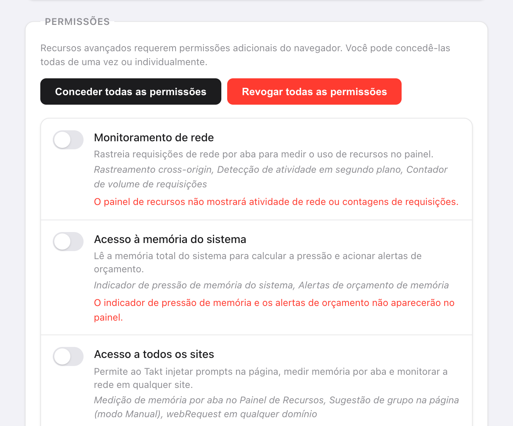

Resposta curta: abra Opções → Dashboard no Takt. Os grupos são ordenados pela memória estimada, e as abas de cada grupo aparecem da maior para a menor.
- Estimativa de memória por aba, tempo ocioso, domínios de terceiros e atividade em segundo plano.
- Nota de saúde de A a F por grupo de abas, uma barra de memória do sistema e orçamentos de memória que descarregam abas por você.
- Premium (US$ 3/mês ou US$ 30/ano). Medido no seu navegador, e por nada fora dele.
Por que é difícil saber qual aba está usando memória?
O Chrome mostra um número de memória no cartão que aparece ao passar o mouse sobre uma aba, uma aba por vez. Com 30 abas abertas, são 30 passadas de mouse, e nenhum total.
No geral, uma aba sozinha nem importa. O que importa é se o grupo a fechar é "Research" ou "Entertainment". Por isso o Takt soma a memória por grupo de abas.

Como o Takt estima a memória de uma aba?
O Takt roda um script curto dentro de cada aba e soma quatro partes:
| Parte | Como é medida |
|---|---|
| Heap JavaScript | Heap em uso, como o Chrome o informa à página |
| Árvore DOM | Número de elementos × cerca de 1,5 KB |
| Recursos carregados | Tamanho decodificado de cada arquivo que a página carregou |
| Buffers de canvas | Largura × altura × 4 bytes por canvas |
Trate o resultado como uma classificação, não como uma fatura. Ele deixa de fora a sobrecarga do próprio navegador para cada aba, então o número do Chrome para a mesma aba pode ser diferente.
Algumas abas não podem ser medidas. As abas suspensas não têm nada rodando. As páginas do Chrome (chrome://), as páginas de extensões e a Chrome Web Store não permitem scripts, então aparecem em Abas não monitoradas. Se uma aba não responder em 3 segundos, o Takt mostra o último valor conhecido.

O que significam as notas de saúde de A a F?
Cada grupo começa com 100 pontos e perde pontos em quatro fatores:
| Fator | Condição | Penalidade |
|---|---|---|
| Memória (total do grupo) | Mais de 500 MB / mais de 200 MB | −30 / −15 |
| Tempo ocioso médio | Mais de 60 min / mais de 30 min | −20 / −10 |
| Abas com atividade em segundo plano | Mais de 3 / pelo menos 1 | −20 / −10 |
| Domínios de terceiros | Mais de 50 / mais de 20 | −15 / −5 |
Notas: A é 90 ou mais, B de 75 a 89, C de 60 a 74, D de 40 a 59, F abaixo de 40. Um grupo que usa 300 MB, com abas ociosas há 45 minutos em média, fica com 75: um B.
"Atividade em segundo plano" quer dizer que a aba concluiu uma requisição de rede nos últimos 60 segundos. "Terceiros" quer dizer qualquer domínio que não seja o site da própria aba e seus subdomínios. As CDNs mais comuns são contadas à parte, para não inflar a nota.
O que faço depois de encontrar as abas pesadas?
- Recomendações de suspensão. O Takt lista 5 abas para descarregar, classificadas por memória e tempo ocioso, com peso extra para a atividade em segundo plano. Ele pula a aba ativa, as abas fixadas e uma aba que esteja sozinha no grupo. Clique em Suspender para descarregar uma.
- Fechar tudo, num cartão de grupo, fecha aquele grupo.
- Hiberne uma aba que você quer de volta depois. Veja como a hibernação funciona.
Posso limitar quanta memória um grupo de abas usa?
Sim. Em Settings → Memory Budgets, digite o nome de um grupo e um limite em MB. O Takt verifica os orçamentos a cada 15 segundos.
Quando um grupo passa do limite, você recebe uma notificação com o grupo, o uso, o orçamento e "Suspending tabs in 10s — click to cancel". Se você ignorar, o Takt descarrega as maiores abas daquele grupo até ele voltar a ficar dentro do orçamento. Ele nunca toca na aba ativa, nas abas fixadas nem nas abas reproduzindo áudio. Clique na notificação para cancelar.
Os orçamentos usam as mesmas estimativas, então também precisam do Acesso a todos os sites.
Quais permissões o painel precisa?
Nenhuma na instalação. Você concede cada uma em Settings → Permissões e pode revogá-la ali a qualquer momento.
| Permissão | O que acrescenta | Sem ela |
|---|---|---|
| Acesso a todos os sites | Estimativas de memória por aba | A memória mostra "—" |
| Monitoramento de rede | Domínios de terceiros e atividade em segundo plano (também precisa do Acesso a todos os sites) | Sem as colunas de rede |
| Acesso à memória do sistema | A barra de RAM do sistema | "Memória do sistema indisponível" |
O Monitoramento de rede só vê as requisições feitas depois que você o concede. Recarregue as abas abertas para começar a contar. O Takt lê os endereços e os tempos das requisições, não o conteúdo das páginas.

O que o painel não consegue dizer
Ele estima a memória das páginas. Ele não lê a lista de processos do Chrome, então não vê a memória da GPU, as extensões nem o próprio navegador. Se a barra do sistema coloca a maior parte da sua RAM em "Outro", essa memória está indo para outros aplicativos ou para o próprio Chrome, não para o que as suas páginas guardam.
Encontre o grupo que está devorando sua RAM. Depois, ponha-o para dormir.
Adicionar o Takt ao ChromePerguntas frequentes
Como o Takt estima a memória de uma aba?
Ele soma o heap JavaScript em uso, o número de elementos × cerca de 1,5 KB, o tamanho decodificado dos recursos carregados e os buffers de canvas a largura × altura × 4 bytes. Use para comparar abas.
Por que a coluna Memória mostra um traço?
O Acesso a todos os sites não foi concedido, a aba está suspensa, ou é uma página em que extensões não podem rodar scripts, como as páginas chrome://.
O Painel de recursos é gratuito?
Não. O painel e os orçamentos de memória são Premium, por US$ 3/mês ou US$ 30/ano.
O Takt envia os dados das minhas abas para algum lugar para medi-los?
Não. Todas as medições rodam dentro do seu navegador. Veja como o Takt mantém os dados no seu computador.